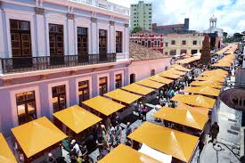
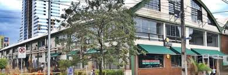

FEIRA LIVRE BRASILEIRA
Gabriel Jonas Terra Luciano, Juan Pansutti Coelho, Alexandre Linhares Dias.

1. O que é feira livre?
Feira é uma palavra que vem do latim e significa dia de festa. Feiras livres são mercados a céu aberto que acontecem semanalmente em locais pré-determinados, onde pessoas vendem frutas, legumes, verduras, produtos frescos e outros itens diretamente ao público.
2. Onde surgiram as feiras livres?
As feiras livres surgiram por volta de 2.000 a.C no Egito, Grécia e Roma. Na Idade Média se tornaram importantes centros de comércio, ajudando no crescimento das cidades. No Brasil, chegaram em 1914, em São Paulo, no Largo General Osório.
3. Tradição no Brasil
A tradição foi trazida pelos portugueses, inspirada nas práticas medievais. São espaços de cultura, sociabilidade e renda para muitos trabalhadores.
4. Importância cultural
A feira livre é um importante espaço de convivência, preservação cultural e identidade alimentar. É um local onde tradições, saberes e relações sociais são fortalecidas.
5. Feiras no Brasil
Segundo o Ministério do Desenvolvimento Social (MDS), o Brasil possui mais de 5 mil feiras em mais de mil municípios. Algumas das mais famosas são:





Fontes:
https://www.gazetadopovo.com.br